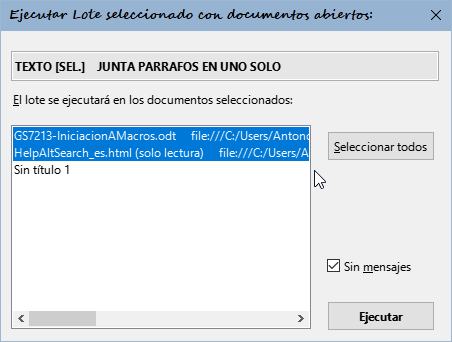

Macro
AltSearch Macro
AltSearch
(Alternative
dialog find and replace for Writer)
version
1.4.2
| What
this extension offers | Searching
| Replacing | Batch
mode | Limitations | History of changes |
Author: Tomas Bilek –
© 2007-2013
Licence: LGPL, see http://macrojtb.hys.cz/0gnu-lgpl_en.html
The version [v1.2]
of help file edited by Anna Sharman 2008.
This
macro is distributed in the hope that it will be
useful, but WITHOUT ANY WARRANTY.
What this
extension offers in comparison with the standard OOo
Find dialog:
-
Fast selection of preset regular
expressions and extended regular expressions
-
Counting of the number of
occurrences of the found expression using the [ Count ] button
-
Search or replace strings can
contain one or more paragraphs
-
Search or replace strings can
contain hexadecimal or decimal characters
-
Searching for manual page and
column breaks, and adding or removing them
-
Searching for a block of paragraphs
delimited by two text marks
-
Once text string is found, the
selection can be expanded or reduced by a specified
number of characters
-
Multiple searches and replacements
can be done in one step
-
Searching can be done in Notes,
Text fields, Cross-references and Reference marks,
either for their content, their name or target
marker, and these can also be inserted
-
Tables, Pictures and Text frames
can be searched according to their name; it is
possible to substitute them with any text, text
content, object's name or the clipboard contents
-
Searching and inserting of
Footnotes and Endnotes (from OOo version 2.3). It is
possible to select the text of all footnotes or
endnotes at once and to assign them any style
-
Searching for text that is similar
to, or has the same formatting as, the text at the
cursor point
-
Subexpressions within the search
string can be replaced individually by placing them
inside parentheses () and referring to them in the
replacement string as \1, \2 ...to \9 in order
-
The paragraph style, character
style, list style, text properties and Hyperlink URL
can be set for the search or replace text
-
Found text can be replaced with:
clipboard contents, a counter of the number of
replacements, or the page number where it is found
-
The results of replacement can be
redirected to another text file
-
Batch mode: search and replace
parameters can be saved and loaded; it is possible
to save several search and replace operations in a
sequence and quickly execute the whole set later
with one command. [v1.4]: Execute the batch with
more opened text documents together
-
[v1.2] Dialog for quick assignment
of keyboard shortcuts to batch operations that have
been saved
-
[v1.3] Preserve capitalization - If
found text begins with a capital letter, also the
text replacement will begin with a capital letter
-
[v1.3] Searching for character
style, possibility to choose a style from the menu.
-
[v1.3.1] Searching list and
paragraph styles through the list box 'Properties'
-
[v1.4]
Search and repalce of Bookmarks
Here is a tip for setting up keyboard
shortcuts if you use AltSearch frequently:
1. Open the dialog Tools -
Customize... - Keyboard
2. In the Category field,
navigate to OpenOffice.org Macros - User - AltSearch
- AltSearch
3. In the Function field,
select and assign the following (suggested) shortcuts
using the Modify button:
_AltSearch:
Ctrl+H (to open the Search dialog);
_FindNext: Ctrl+L (to find the next occurrence of the
search string after the cursor point, without opening
the search dialog);
_FindBack: Ctrl+Shift+L (to find the occurrence of the
search string before the cursor point, without opening
the search dialog).
[v1.2] From version 1.2 onwards you
also can assign shortcuts directly from the AltSearch
dialog - see Batch
mode
 The
List box menu (above the search string input field) The
List box menu (above the search string input field)
This contains frequently used or
complicated regular expressions or search parameters
that can be used in the search field. After choosing an
entry, the corresponding parameters are transferred to
the input field (or to both the search and replace
fields if this is specified). These may be inserted in
several ways: before or after the cursor or replacing
the text in the input box. At the same time, the
"Regular expressions" checkbox is ticked.
Searching
List box 'Regular'
This box
contains some helpful regular expressions. They are
described in the OOo help under the title List
of Regular Expressions.
Limitation:
The syntax using regular expressions isn't fully
compatible with OOo original. There are problems
especially with searching when using the wildcard *, +, ? or {n,n} just after
subexpressions determined by parentheses ().
E.g . (Mi)?ster will not be
found (however, when using [ Count
] the true count will be returned - this
function works only when using the compatible mode).
Further, subexpression of the type (.*)any
or (.+)any are searched for,
the shortest matching occurrence is found, contrary to
the OOo standard search, which will find the longest
matching occurrence. If it is necessary to preserve
compatibility, you can delimit the whole search
expression with an extra pair of parentheses: ((Mi)?ster). But this will, of
course, lose you the chance to cite the subexpression in
the replace expression as a reference, i.e. \# where # is a reference number
(max. 9) of the subexpression. It is also not possible
to use a reference on the subexpression (determined by
parentheses ()) in the search
expression at the same time as in the replace
expression. See also subexpressions.
Other
special wildcard parameters:
\l - represents any alphabetic
character; same as[:alpha:]{1,1}.
\d - represents a decimal digit;
same as [0-9].
\p - represents the paragraph
termination sign,
in contrast to
the OOo standard search, $ also represents an empty
paragraph. It is possible to use wildcards such as +, *,
or {min,max} with $.
\p{1,} - will find the next end
of paragraph followed by an unlimited block of empty
paragraphs. Same as \p*.
\p{2,4} - will find the next end
of paragraph followed by at least one and at most three
empty paragraphs, i.e. a total of 2-4 paragraphs one
after each other.
Limitation: Slow when used
separately. Sometimes there are problems when searching
backwards.-
\xhhhh - will enable the input
of a character's code as a hexadecimal number (hhhh)
\#ddddd - will enable the input
of a character's code as a decimal number (ddddd)
If the next
character isn't a digit, it is not necessary to keep of
all 5 positions of ddddd. Otherwise it is necessary to
fill in zeros from the left.
\c - represents a manual column
break.
Limitation: Slow when used
separately.
\m - represents a manual page
break.
Limitation: Slow when used
separately. If subexpression ()
is used, the parameter \m must
be at the start of the search string, and it must not be
alone: \m(...) but not (...)\m.
\s - represents any space:
space, non-breaking space, tab or manual line break.
Same as [ \xA0\x9\xA].
\S - represents a non-breaking
space (\x00A0 or \#160)
List box 'Extended'
[::BigBlock::] - searches for a
block of paragraphs (of unlimited length) delimited by
some known text:
start[::BigBlock::]end – first, start is searched for, and when
it is found, end is searched
for. If both are found, the whole block between them is
selected.
In the replace
string you can use the parameters \b,
& or \e
for inserting the contents of start, found block of paragraphs, or end, respectively.
Limitation: In the initial and
final strings you cannot use the ||
sign for multiple searching and replacing; see below.
[::Grow n1,n2::] - the found
block of text will be expanded by n1 characters to the
left and n2 characters to the right:
[::Grow -1,-1::]text - if the
word text exists in the text
it will be found, but only ex will
be selected.
Limitation: it is necessary to
always use [::Grow... at the
beginning of the search string and put the search
expression after it. If n1 or n2 are negative values,
then (depending on size and content of the search
expression) the next search may cyclically find the same
place.
text1||text2||text3||… - multiple
search and replace operations in one step:
Add the sign || to the end of the search and
replace expressions to delimit the partial searches and
replacements.
Search for: text1||text2||text3
Replace: neco1||neco2||neco3
This will search for text1 and
will replace it with neco1,
then continue the search for text2,
replace it by neco2, etc.
Limitation: you cannot use the
parameter [::BigBlock::] with
||, nor can
you use subexpressions.
Searching for Objects:
[::Note::] - searches text notes
(yellow bubbles) according to their contents.
[::Note::] - will find the next
text note
[::Note::]pozn. - will find any
text note containing the substring pozn.
Limitation: you can only search
for substrings in the contents of notes - you cannot use
full regular expressions.
[::Field::] - searches text
fields according to their contents.
[::Field::] - will find any
normal text fields
[::Field::]obsah will find text
fields in the document that display the text obsah
Limitation: the same as for [::Note::]; see above.
Any special fields (e.g. hidden) are not found.
[::TextFrame::] - searches text
frames according to their name.
[::TextFrame::] - will find any
text frame
[::TextFrame::]rám1 - will find
text frames containing the substring rám1 in their name
Limitations:
1. When using
the [ Find ] button, you
will find the next text frame only if the frame is
selected or if the cursor is inside the frame. If the
cursor is a long way away in the text, the first text
frame from the internal list of frames in the document
is found. The option "Current selection only" currently
doesn't work.
2. The
practical usability of the [
Replace ] button is, as a consequence of point
1, very limited.
3. The order
of searching matches (unfortunately, provisionally, I
hope) the order in which the text frames have been
inserted into the document and not the order
within the pages of the document from the start to the
end.
4. You can
search only for a substring in the name of frame - you
cannot use full regular expressions.
[ Find all ] and [ Replace all ] are fully
functional, including when used with the option "Current
selection only".
[::Picture::] - searches
pictures according to their name.
[::Picture::] - will find any
picture
[::Picture::]obr1 - will find
pictures containing the substring obr1
in their name
[::Picture::]\\text - will find
substring text inside pictures
Title text. [v1.4]
[::Picture::]\\ - will find all
pictures with empty Title text. [v1.4]
Limitation: the same as for [::TextFrame::]; see above.
[::TextTable::] - searching
tables according to their name
[::TextTable::] - will find any
table
[::TextTable::]tab1 - will find
any table containing substring tab1
in its name
Limitation: the same as for [::TextFrame::]; see above.
[::Footnote::] - searches
footnotes (FN)
[::Footnote::] will find the
anchor of any FN
[::Footnote::]5 will find the
anchor of a FN whose anchor contains the substring 5
[::Footnote::]\\text will find
the anchor of FN whose text contains the substring text. If the button [ Find all ] is used, the text
of all FNs that contain the substring text will be selected.
Using [::Footnote::]\\ with the button
[ Find all ], the text of all
FNs will be selected (handy for assigning a paragraph
style to all FNs at once)
Limitation: It works well only
from OOo version 2.3.
[::Endnote::] - searches
endnotes
Use of
parameters and limitations are the same as for [::Footnote::]; see above.
[::ReferenceMark::] - searches
for the target marker of cross-references
[::ReferenceMark::] will find
any text set as a reference marker
[::ReferenceMark::]text will find
any text set as a reference marker that contains
substring text
[::ReferenceMark::]\\ref1 will
find any text set as a reference marker whose name
contains the substring ref1
[::ReferenceMark::]\\\\ will find
any text set as a reference marker whose text is empty
[::Reference::] - searches for
text fields (cross-reference) by their markers
[::Reference::] will find all
text fields of the cross-reference type
[::Reference::]above will find
cross-references that contain the substring above
[::Reference::]\\ref1 will find
cross-references whose name contain the substring ref1
[::Reference::]\\\\ will find
cross-references whose text is empty
If Reference is chosen from the
list box Extended and at the same time the
cursor is positioned in text that is a Reference mark,
then the corresponding source name will be added to the
Search for box automatically, and it is possible
to search it immediately.
[::Bookmark::] - searches for
Bookmarks [v1.4]
[::Bookmark::] will find place
in the text or a block of text marked as bookmark
[::Bookmark::]text will find text if it is inside a text block
who is marked as bookmark
[::Bookmark::]\\RefHeading will
find a place in the text or a block of text marked as
bookmark only when if name of bookmark contains
substring RefHeading (searches substring in names of
bookmarks)
List box 'Properties'
This enables searching according to
properties (attributes), and also according to the
values of these properties.
The search entry must begin with the string [:::, followed by
a name
of a property (more than one name can be separated using
the |
sign) and must end with the
string ::]. After this can follow the specification of
some search text. If the value of the property is to
be searched, the construction name=value
should be used.
[:::ParaStyleName::] -
searches for paragraph style [v1.3.1]
[:::ParaStyleName=::] will
find all whole paragraph with paragraph style another
than the Default style
[:::ParaStyleName=Example::]
will find whole paragraph with paragraph style Example
[:::ParaStyleName=Example::]
something will find text something
if it is formatted through paragraph style Example
Limitation: Not find some parts of the
text with zero length, for example, an empty paragraph.
Can not simultaneously combine with other text
properties.
[:::CharStyleName::] -
searches for character style [v1.3]
[:::CharStyleName=::] will
find part of the text with character style another than
the Default style
[:::CharStyleName=Example::]
will find part of the text with character style Example
[:::CharStyleName=Example::]
something will find text something
if it is formatted through character style Example
Limitation: It works just ahead - Backward
switch does not work (message: not found).
Not find some parts of the text with zero length, for
example, an empty paragraph. [v1.3.1]
Can not simultaneously combine with other text
properties. [v1.3.1]
[:::NumberingStyleName::]
- searches for list style - use similar to searches
for paragraph style, see above. [v1.3.1]
[:::HyperLinkURL::] - searches
for text with the attribute HyperLinkURL
[:::HyperLinkURL::] will find
all hyperlinks
[:::HyperLinkURL::]link will
find the part of the hyperlink containing the text link.
[:::HyperLinkURL=file:///c:/pokus.odt::]
will find a hyperlink in which the URL is the
substring file:///c:/pokus.odt.
[:::HyperLinkURL=file:///c:/pokus.odt::]link
will find part of a hyperlink in which the URL is
the substring file:///c:/pokus.odt
and in which the text contains the text link.
A list of
available text attributes (with the values they have in
the current selection) can be loaded using the button [ Pick properties ];
this is displayed in the list box next to this button. A
brief description of most of these properties can be
found here.
Similar character attribute -
this function loads any of the character attributes of
the current selection that have been manually changed
and searches for similarly formatted places. If e.g. the
cursor is on text for which the name of the font has
been manually changed, all places with a changed name of
font will be found. The search box will contain e.g. [:::CharFontName::].
Same characters attribute - this
function loads any of the character attributes of the
current selection that have been manually changed and
searches for identically formatted places. If e.g. the
cursor is on text for which the name of the font has
been manually changed, all places with a changed font
name and the same font name will be searched
for. The search box will contain e.g. [:::CharFontName=Arial::].
Limitation:
The OOo search engine
does not support all the existing paragraph and
character properties. Not all combinations work as
might be expected.
Replacing
List box 'Replace'
& \0 - both these parameters
mean the same thing: on replacement they represent the
whole found text
If the
expression was searched for using [::BigBlock::],
these parameters represent only the block of paragraphs
between the start and end marks.
If the
object was searched for using [::Note::],
[::Field::], [::TextFrame::], [::Picture::], or [::TextTable::], these parameters
represent exactly these objects (which are inserted
using the clipboard).
\b \e - If the expression was
searched for using [::BigBlock::],
these parameters represent content of the start and end
marks.
Limitation: these cannot be used
together with subexpressions
().
\1 \2 \3 \4
\5 \6 \7 \8 \9 - content of subexpressions
If the
search expression was searched for using parentheses (),
\1 represents the contents of
the first pair of parentheses, \2
corresponds to the contents of the second pair (), etc.,
up to \9, which corresponds to
contents of the 9th pair. Only 1st level parentheses are
valid; nested levels inside them are ignored.
Example:
Using the expression (\d{1,2})\.
*(\d{1,2})\. *\d{2,2}(\d{2,2}) it is possible to
find dates in the format 01. 12. 2007 and
replace them with dates in the format 07-12-01 using the
replace expression \3-\2-\1.
If you need
to switch off the processing of subexpressions (e.g. to
preserve compatibility with the regular expressions in
standard OOo), you must put the whole search expression
within an additional pair of parentheses. Then all other
nesting levels of parentheses for replacement will be
ignored.
Limitation: Using subexpressions
is relatively slow and not fully compatible with the
original search function in OOo.
There is an
in incompatibility with search wildcards placed
immediately after a subexpression, such as (opak)*, which is caused by the
principle of sequential searching of sequential blocks
of text; see here. In these
cases the functions [ Count ]
and [ Find all ] return the
correct counts, but other functions (without switching
to compatibility mode) will not find anything. In more
complicated cases you will need to examine what
happens,and experiment to get the best results.
\p - inserts an empty paragraph
\t - inserts a tab (\x0009 \#9)
\s - inserts a non-breaking
space (\x00A0 \#160)
\n - inserts a manual line break
(\x000A \#10)
\c - inserts a manual column
break before the found paragraph(s)
\m - inserts a manual page break
before the found text
\M - inserts a manual page break
after the found paragraph(s)
\r - removes manual column or
page breaks in the found paragraph(s)
\xhhhh - inserts a character
using the hexadecimal character code (as hhhh)
\#ddddd - inserts character
using the decimal character code (as ddddd).
\h{addressURL} - changes the
found text to a hyperlink with the URL addressURL
\h{}, \h changes the
found text to a hyperlink with a URL of an empty string
- this has the effect of deleting a hyperlink's URL (the
text of hyperlink of course stays unchanged).
\H{substr}
- replaces the substring in the hyperlink's URL
This should
be used at the same time as searching using [:::HyperLinkURL=::].
If the
expression was searched for e.g. using[:::HyperLinkURL=substr::], only
hyperlinks will be found whose URLs includes the
substring substr. Using \H{repl} in the replace
expression will find the text substr
in the URL and replace it with repl.
\u - inserts in the replacing
expression the URL address of the found text (if a
hyperlink is found)
\P{Text} - sets up Paragraph
style Text in the found
paragraph(s)
The style is
applied to the paragraph containing the text of the
replaced expression. To set the style to "Default", use
\P or \P{}.
If this parameter is used a number of times with
inserted paragraph(s), the style is changed with every
new parameter, and is valid as far as the end of the
paragraph. Example: If the expression is replaced using
block1\P{Subtitle}\p
block2\P{Heading 1} so block1
will be inserted and assigned the style Subtitle, and after it a new
paragraph with text block2
will be inserted and assigned the style Heading 1.
\C{Quotation} - sets up the Character style Quotation in the found text
The style is
applied on the whole text of the replaced expression. To
set to the "Default" style use \C
or \C{}. If this parameter is
used a number of times, the character style is changed
with every new parameter, and the last is valid as far
as the end of replacing expression. Example: If the
expression was replaced using block1\C{Quotation}block2\C{Example},
block1 will be inserted with
the character style Quotation,
and after it block2 will be
inserted and assigned the character style Example.
\N{List 3} - sets up List style
List 3 in the found
paragraph(s)
Applies
analogous usage rules to those for the parameter \P{}. List style can be removed
with \N or \N{}.
\D - sets up the default
formatting for the found text, just like using
Ctrl+Shift+Space
Applies
analogous usage rules to those for the parameter \C{}.
\d - resets text attributes to
default only in the place of use.
Contrary to
\D it has no effect on the
previously inserted text.
\F{New footnote} - inserts a new
footnote that contains the text New
footnote in the place of replacement
Inside the
curly brace it is possible to use any of following
parameters: \i, \I, &,
or \1
\E{New endnote} - inserts a new
endnote in the place of replacement ; analogous to \F
\B{ref1|text} - inserts the text
text with the marker ref1 for a cross-reference
Inside the
curly brace it is possible to use any of following
parameters: \i, \I, &,
or \1
\L{0,0,ref1} - inserts a
cross-reference (field) with the parameters 0,0 and
reference marker ref1
Meaning of
numeral parameters:
first
number - type of reference: 0 - page number in
Arabic numerals, 1 - chapter number, 2 - the reference
text , 3 - above/below , 4 - page number using the
numbering type defined in the page style, 5 - category
and number of a caption, 6 - caption text, 7 - number of
a sequence field (caption)
second
number - type of the source of a reference field;
the source is : 0 - a reference mark, 1 - a number
sequence field, 2 - a bookmark, 3 - a footnote, 4 - an
endnote
\K{w,bookmark_name} - insert
bookmark named bookmark_name.
[v1.4]
First
parameter is mode of anchore:
w - bookmark
on whole selected text block
b - bookmark
anchored on start of text block
e - bookmark
anchored on end of text block
\K{}, \K
- remove bookmak if is present in selected text block.
It remove only bookmark, text block remain.
\K{w,new_name}\K - rename
bookmark - it must be find by [::Bookmark::]
or on place with bookmark is present.
\o - inserts the text content of
the found object
If the
expression was searched for using [::Note::],
[::Footnote::], [::Endnote::], [::TextFrame::], [::Picture::], or [::TextTable::], the text inside
this object will be inserted. Tables come out with tabs
between columns and paragraphs between rows.
Limitation: The maximum size of
the whole resulting text after converting a table is
limited to 65 kB.
If the
expression was searched for using [::Field::],
[::Reference::], or [::ReferenceMark::] , the
displayed text of the anchor or field will be inserted.
\O - inserts the name of the
found object
If the
expression was searched for using:
[::TextFrame::], [::Picture::], or [::TextTable::], the name of this
object will be inserted.
[::Note::] or [::Field::], the type of the text
field will be inserted
[::Reference::] or [::ReferenceMark::], the name of
the reference mark will be inserted
[::Footnote::] or [::Endnote::], the displayed text
of the anchor will be inserted
\i - inserts the occurrence
number of the found object or text in a count of the
occurrences in the text - this works only if [ Replace all ] is
used
\i{start,digit} - formatted
counter: \i{9,4} - count from
9, for 4 digits (0009, 0010, 0011,...) [v1.4]
\I - inserts the number of the
page on which the search expression is found
If
redirection of the replace expression to another file (\R) is used (see below), the
number of the page containing the starting position of
the found text is inserted in the other file.
Limitation: this does not work
correctly in footnotes, headers and footers.
\v - inserts the contents of the
clipboard
\V - inserts contents of the
clipboard as unformatted text
\f - preserves format
If & or \0
is used in the replace expression, replacement will be
realized using the clipboard. If the found text contains
text fields, notes, references etc, they will be
preserved in their original state.
\R - redirects the replace
expression to another text file
This option
causes the replace expression to be inserted into new
.odt file instead of replacing the found text. The
original file will stay as it is, without changes. To
enter the name of the output file, use the format \R{filename}. The name must have
the accurate OOo window header format, including the
text " - OpenOffice.org Writer". New records from this
redirection are always added to the end of the file.
Example:
If the search
expression was searched for using [:::HyperLinkURL::]
and the replace expression is Link
\i, page \I: & (URL: \u)\p\R, when you click
the [ Replace all ]
button all the hyperlinks found in original file will be
listed in a new file in the form Link 1,
page 1: textOfHyperlink (URL: URLaddress) in separate paragraphs.
Button and
List box 'Pick properties'
Using the [ Pick properties ]
button you can update the list of (some) properties and
their values for the currently selected object. Then you
can browse the list and choose one from the list box
next to the button.
\A{properties=value} - sets in
the replace expression the value of the specified
property.
Uses rules
analogous to those for the parameter \C{}.
Batch mode using: [ Batch >> ]
 Batch mode enables saving and
loading of preset search and replace parameters. It is
possible to save several search and replace operations
in sequence to a single sequence and then quickly load
and execute the whole set. Batch mode enables saving and
loading of preset search and replace parameters. It is
possible to save several search and replace operations
in sequence to a single sequence and then quickly load
and execute the whole set.
You can set all parameters using the [ Save batch ]
button. In the dialog that is then shown, you will be
offered the name used for the last batch, which can be
renamed. If you enter an name that already exists, you
can choose whether the old content will be overwritten
or whether it will be preserved and new content added
onto the end. At the same time, the command "ReplaceAll"
will automatically be saved, with which the batch will
be subsequently executed. This command can later be
changed by manually editing the batch rule file.
The button [ Batch >> ]
switches to the dialog 'Batch manager', where you can run
and edit batches. To return back to the search dialog,
use the [ << Searching ]
button.
All batch parameters are saved to the
text file AltSearchScript.txt
into the user's directory …/OpenOffice.org2/user/config/,
and you can open and edit it using the [ Edit ] button in the
Batch manager dialog.
For editing the text, the program notepad is used by default,
but you can set it to use any other text editor by
editing the file AltSearchEditor.ini in
the same directory. After manual changing and saving the
file using the batch manager you can then refresh the
list of batch names using the [ Refresh ]
button. The syntax used in the file AltSearchScript.txt is
described at the beginning of the same file, using UTF-8
encoding (from v1.1.1).
When you double-click on an item in the
list, or click the [ Execute ]
button, the chosen sequence will be loaded and the
search and replace operations will be executed. When
using batches on selections I advise leaving 1-2 empty
paragraphs at the beginning and the end of the
selection.
The button [ Transfer ]
is used for transferring the parameters for searching,
replacing and setting to the search dialog without
executing them. If the batch contains a sequence of
several searches and replacements, only the last part of
the sequence will be transferred.
 [v1.2] The button [ Key shortcut ] opens
a dialog that allows you to assign a keyboard shortcut
to an existing batch. To use this: [v1.2] The button [ Key shortcut ] opens
a dialog that allows you to assign a keyboard shortcut
to an existing batch. To use this:
First select
the name of batch from the drop-down menu box
Second, if
required, change the name of the auxiliary subroutine
for OOo Basic
Third set
the desired keyboard shortcut
Finally press
the button [ Assign
]
In order for the shortcut to function,
at the time of assignment an auxiliary procedure is
created in the Basic module Standard.AltSearchBatchs
with a name that is adjusted according to Basic syntax.
This name is displayed in the second drop-down menu box
of the dialog. When this auxiliary procedure is run, the
AltSearch dialog will be opened and immediately the
specified batch will be executed. Correct functioning
depends on the compliance of the batch name listed
inside the procedure and the name of existing batch. If
you change the name of batch to which a shortcut key was
previously assigned, you will need to re-assign a key
shortcut (the old auxiliary procedure to the original
name can be deleted by selecting it in the second
drop-down box and using the side button [ x ]). Any keyboard shortcut that
is used in OOo writer can be released using the lower
button [ x ]. So
be careful not to inadvertently remove an important
shortcut.
[v1.4]
 Multiple execute Multiple execute
The selected batch in the Batch manager
dialog can be applied to several currently open text
files at once:
1st Select Batch in the Batch
manager dialog
2nd Click on the button [Multiple execute >>]
3rd Select files for multiple
executing from list (using Ctrl + mouse click). The list
shows only the currently open files of the "writer"
type.
4th Press button [Start] for start of execute.
Recommend: During the processing in Ooo You do nothing.
The "Disable message" suppress
messages about executed changes after each file. Soon as
processing is over, the final report will be displayed.
Limitations:
If limitations are known, they are
mostly mentioned near of the description of individual
parameters. Generally applicable limitations:
-
If the option "Current selection
only" is active, pieces of text that are inside
frames or tables will not be found, even if they are
inside selected blocks. Searching inside blocks is
limited to only the same text area as the selected
block. Multiple selection of blocks isn't supported.
-
The function "Find all" will fail
to select the paragraph mark \p,
because the property "Highlighting" (the character's
background colour) is used for selection, and you
cannot use this to highlight a paragraph mark. It
follows that, in addition, this function is limited
to texts in which highlighting isn't used. If the
document contains highlighting, a warning dialog
will appear when "Find all" is used.
-
With replacement with more
complicated expressions, the function "Undo" is
fragmented into partial replacement steps, so that
it can easily happen that the number of undo steps
needed to restore the document to its original state
will not match the expected number.
History of changes:
Version
1.4.2 3/2017 [v1.4.2]
Version
1.4.1 11/2015 [v1.4.1]
-
update of Dutch localization
-
Effort to repair (non)displaing of
arrows pull-down menus (Regular, Extended...) in
some Linux versions of LO.
Version 1.4 12/2013
[v1.4]
News:
-
Added support for a new search ICU
regullar exppression specified by hex code
(indication new ICU in the upper right corner of the
dialog and bubble with version Ooo). In later
versions of OOo is accepted both format \uhhhh and
also \xhhhh.
-
"Multiple execute" - execute batch
for to more open text documents at once.
-
Searching Bookmarks, inside his
text, inside his names.
-
Inserting bookmarks using the
\K{w|b|e, bookmarkname}. It is possible in bulk
delete and rename.
-
Formated counter: Enter the initial
value and the number of entered digits, eg \i{9,4} -
counted from 9, for 4 digit (0009, 0010, 0011, ... )
-
Search for images:
- display Alternate text (Title) after ">"
character in the find dialogue;
- Search for alternative text (Title) using \\
-
Experimental ability to directly
switch the language of localization using the right
mouse button on the [?]
Fixed bugs:
-
Fix bad searching of \\
-
addon.xcu modified so that toolbars
were displayed on later versions Lo, Oo
-
Search substring in URL Hyperlink -
found nothing - (but worked to OOo v2.3)
-
some minor corection of text msg
-
new help 1.3.1 nl
Version 1.3.2 6/10
[v1.3.2]
Fixed bugs:
Version 1.3.1 4/10
[v1.3.1]
News:
-
searching for paragraph and list
style (by list box 'Properties', similarly as character style)
-
Added a default batch for convert a
text to BBcode (Appears into batch file
"AltSearchScript.txt", after first instalation of
AltSearch only. When reinstalling AltSearch, the
file "AltSearchScript.txt" must be find, rename, and
then when you first start AltSearch will be loaded
default batchs.)
Fixed bugs:
-
minor changes in the Italian
localization
-
updating the Dutch help
-
list of text properties,
the right of the button "Pick
Properties", is now sorted
alphabetically
Version 1.3 11/09
[v1.3]
News:
-
option "Preserve capitalization"
-
searching for character style (List
box 'Properties'
- Character style)
-
possibility to choose a
searched/replaced styles from the menu (see list box
'Properties' -
Character style; list box 'Replace' -
Pargraph/Character/List style)
-
AltSearch main dialog box tries not
to overlap found text
-
Italian Help
Fixed bugs:
-
tables inside the block - it found
only before the first table, not after this one
-
minor changes in the Dutch
localization
Version 1.2.2 5/09
[v1.2]
News:
-
Italian localization (without help)
-
French Help (with parallel English)
-
added item "Alt. Find and
replace..." to the OOo EDIT menu
-
AltSearch is now available for the
type of HTML and Master documents.
Beware, if something is replaced in the main
document, the changes will be saved only to it, but
not to the linked documents!
Fixed bugs:
-
help file v1.2
edited by Anna Sharman
-
changes of English text in dialogue
"Key shortcuts assign"
-
the "Growe" command changed to Grow
("Growe" but works continue)
-
shortcuts now work for HTML
and Master document
Version 1.2.1 7/08
[v1.2]
News:
Version 1.2 7/08
[v1.2]
News:
-
built in new dialog for fast assign
key shortcut for batches
-
partial French localization
(without help)
-
new parameter for batches:
noSummary (BezSouhrnu) - suppress a summary report
after the end of batch
Fixed bugs:
Version 1.1.2 4/08
News:
-
Spanish localization
-
German localization
Version 1.1.1 3/08
News:
Fixed bugs:
-
crashes with running search or
replace, if it is opened or switched to another OOo
text file
-
file with saved batch parameters .../config/AltSearchScript.txt
is from now encoding in UTF-8
Version 1.1 2/08
News:
-
searching: parameter \l for searching any
alphabetic character
-
searching: searching for
text or name of Referece marks and Cross-references
-
searching: searching for
Footnotes and Endnotes. It works good from version
OOo 2.3
-
replacing: parameter \d for reset to defaut of
text attributes
-
replacing: parameters \F{} and \E{}
for creating Footnotes and Endnotes (changed
parameter for preserving format from \F to \f
)
-
replacing: parameter \B{label|text} for inserting
Reference mark and \L{1,0,label}
for inserting text field Cross-reference
Fixed bugs:
-
support for input hexadecimal's
(&Hnnnnnn) number inside replacing parameter \A{}
-
support for use \} and \I
inside replacing parameters \P{},
\C{}, \F{}
-
with "Find all" for BOLD properties
etc. isn't displayed message with number of matches
-
increased height of button "Pick
properties" and "?" - clipped text at the bottom on
win XP
-
error message and batch malfunction
on localization different from EN a CS
-
with searching Notes, Text fields,
Reference marks, Cross-references, Footnotes,
Endnotes by "Find" buttons is proceed according to
order of page, supports of searching inside
selection
-
with search for: \ptext replace: & is inserting extra line
break after paragraph
-
with search for: \p replace: \p\p occurs unbroken endless
loop
-
with search for: (text)\p replace: \1 occurs error message repldo:
lin: 2842
-
unbroken endless loop search for: ^.*$ replace: x&x
Version 1.0 12/07
- First Public release
|
Macro AltSerach
(Diálogo buscar y reemplazar
alternativo para Writer)
versión 1.4.2
| Qué ofrece esta extensión | Buscar | Reemplazar
| Modo por lotes | Limitaciones | Historial de cambios |
Autor: Tomas
Bilek – © 2007-2013
Licencia: LGPL, ver http://macrojtb.hys.cz/0gnu-lgpl_en.html
Traducción a partir de la
ayuda en español 1.1.2 e inglés 1.4.2 - B.Antonio
Fernández
Esta macro se distribuye con la
esperanza de que sea útil, pero SIN NINGUNA
GARANTIA.
*Nota del traductor de la
versión 1.1.2: Esta traducción se ofrece sin ninguna
garantía, úsela bajo su propio riesgo.
*Nota del traductor v1.42 - Los modificadores de formato
-- explicados en la ayuda: \C{ejemplo} etc... pueden
ocasionar errores por lo que no es recomendable
utilizarlos; al menos en los procesos por lotes. Uselos
con mucha precaución)
Qué
ofrece esta extensión en comparación con el diálogo
estándar de OOo:
-
La posibilidad de
seleccionar rápidamente expresiones regulares y
ampliadas preestablecidas
-
Cuenta ocurrencias
con el botón [ Contar ]
-
El texto buscado o
reemplazado puede contener uno o más párrafos
-
La posibilidad de
representar el carácter de búsqueda o reemplazo en
formato hexadecimal o decimal
-
Búsqueda de saltos de
página y columna manuales y su configuración o
desactivación
-
Búsqueda de bloques de
párrafos delimitados por dos marcas de texto
-
La posibilidad de
ampliar o reducir la selección del texto encontrado
en un número previsto de caracteres
-
Búsqueda y reemplazo
múltiple de un paso
-
Búsqueda de: Notas,
Campos de texto, Referencias cruzadas y Marcas de
referencia por su contenido, nombre de marca y su
inserción
-
Búsqueda de objetos como
Tablas, Imágenes y Nombres de marco por su nombre;
es posible sustituirlos por cualquier texto,
contenido de texto, nombre de objeto, contenido del
portapapeles
-
Búsqueda e inserción de
Nota al pie y Nota final (sólo desde la versión OOo
2.3). Es posible seleccionar de una vez textos de
todas las notas al pie o notas finales y asignarlas
cualquier estilo
-
La posibilidad de
búsqueda de formato similar o del mismo formato de
texto, en función de la posición del cursor.
-
Manejo de subexpresiones
dentro de paréntesis () como una referencia \# en el
texto reemplazado
-
La posibilidad de
cambiar en el texto buscado o reemplazado: estilo de
párrafo, estilo de carácter, estilo de lista y URL
de Hiperenlace y establecer propiedades de texto
-
La posibilidad de
insertar al reemplazar: contenido del portapapeles,
insertar contador de reemplazo y número de página
-
La posibilidad de
redirigir el resultado de expresión de reemplazo a
otro archivo de texto
-
Modo por lotes: Guardar
y cargar parámetros de búsqueda y reemplazo; se
pueden guardar varias búsquedas y reemplazos en una
única secuencia para poder ejecutar ese bloque
después rápidamente
-
[v 1.2] Diálogo para
asignación de atajos de teclado a operaciones por
lotes que han sido guardadas
-
[v1.3] Mantener
mayúsculas - Si se encuentra texto que empieza con
una mayúscula, también la sustitución empezará con
mayúscula.
-
[v1.3] Búsqueda por
estilo de carácter, posibilidad de elegir un estilo
desde el menú
-
[v1.3.1] Búsqueda por
estilos de lista y párrafo mediante los listados
"Propiedades"
-
[v1.4] Búsqueda y
remplazo de Marcadores
Sugerencias para asignar
atajos de teclado de uso más frecuente:
1. Abrir diálogo Herramientas
- Personalizar - Teclado
2. En el campo Área
abrir consecutivamente Macros de OOo - User -
AltSearch - AltSearch
3. En el campo Función
seleccionar y asignar con el botón Modificar los
siguientes atajos:
_AltSearch
Ctrl+H (abrir diálogo Buscar);
_FindNext Ctrl+G (buscar siguiente ocurrencia hacia
delante, sin el diálogo abierto);
_FindBack Ctrl+Mayús+G (buscar siguiente ocurrencia
hacia atrás, sin el diálogo abierto);
[v1.2] A partir de la
versión 1.2 también puede asignar atajos de teclado
directamente desde el diálogo AltSearch. Vea Modo por lotes.
 Menú de lista desplegable
(sobre el campo para establecer expresiones de búsqueda
) Menú de lista desplegable
(sobre el campo para establecer expresiones de búsqueda
)
Contiene expresiones usadas
frecuentemente o expresiones regulares complicadas o
parámetros que se suministran. Tras elegir la entrada
los parámetros correspondientes se pasan al campo de
entrada (o a ambos campos). Éstos pueden ser insertados
de varios modos: al principio, al final, en la posición
del cursor o al texto original que se reemplaza
completamente. Al mismo tiempo se activa la opción
"expresiones regulares“.
Buscar:
Lista desplegable 'Normal'
contiene algunas expresiones regulares
útiles. Su descripción está disponible en la ayuda de
LibreOffice bajo el título Lista
de Expresiones Regulares.
Limitaciones: La
sintaxis usada en expresiones regulares no es
totalmente compatible con la original de OOo. Los
problemas se dan especialmente con búsquedas, cuando
se usan comodines * + ? {n,n} justo
después de subexpresiones entre paréntesis ().
P.e . (Mi)?ster
no se encontrará (sin embargo, cuando
se usa [
Contar ] devolverá la
cuenta correcta - esta función sólo está usando el
modo compatible). Además, si se buscan subexpresiones
del tipo (.*)algo
o (.+)algo, se
encuentra la ocurrencia más corta que cumpla la
condición, contrariamente al estándar de OOo, que
encontrará la ocurrencia más larga. Si es necesario
conservar la compatibilidad, se puede delimitar
completamente la expresión de búsqueda con un par de
paréntesis extra: ((Mi)?ster.
Con ello se perderá, por supuesto, la oportunidad de
citar la subexpresión en la expresión de reemplazo
como la referencia, \# donde #
es el número de referencia (max. 9) de la
subexpresión. También es imposible usar al mismo
tiempo referencia a la subexpresión (entre paréntesis
()) en la expresión de búsqueda y en la de
reemplazo. Ver también subexpresiones.
Otros
parámetros de comodines especiales:
\l - representa cualquier carácter alfabético;
es lo mismo que [:alpha:]{1,1}.
\d - representa un dígito decimal; es lo mismo
que [0-9].
\p - representa la marca de terminación de
párrafo,
en contraste con la búsqueda extándard de
OOo, $, también representa un párrafo vacío. Se pueden
usar los comodines +, *, {min,max} con
$.
\p{1,} - buscará el final de párrafo más cercano
seguido de un bloque ilimitado de párrafos vacíos. Es
lo mismo que \p*.
\p{2,4} –
buscará el final de párrafo más cercano
seguido de al menos uno, máximo tres párrafos vacíos;
entonces serán en total como mínimo 2 y como máximo 4
párrafos uno tras otro.
Limitación:
Lento al usarse por separado. Algunas
veces hay problemas al buscar en dirección hacia
atrás.
\xhhhh –
permite introducir el código de
carácter con un número hexadecimal ( hhhh)
\#ddddd - permitie introducir el código de carácter
con un número decimal ( ddddd)
Si
el siguiente carácter no es un dígito, no es necesario
llenar las 5 posiciones de ddddd. En otro caso hay que
rellenar con ceros a la izquierda.
\c – búsqueda de salto de columna manual.
Limitación:
Lento al usarse por separado.
\m – búsqueda de salto de página manual.
Limitación:
Lento al usarse por separado. Si se usa
la subexpresión (), el
parámetro \m
debe estar al principio de la cadena de
búsqueda, o no puede estar solo: \m(...) pero no (...)\m.
\s - representa cualquier espacio: espacio,
espacio de no separación, tabulador, salto de linea
manual.
Es lo mismo que [ \xA0\x9\xA].
\S – representa el carácter: espacio de no
separación (\x00A0 o \#160)
Lista desplegable 'Ampliado'
[::BigBlock::]
- busca bloques de párrafos (longitud
ilimitada), delimitados por algún texto conocido
inicio[::BigBlock::]fin
- en primer lugar busca inicio y tras encontrarlo busca fin. Si encuentra ambos, se selecciona el
bloque completo.
En la cadena de reemplazo se pueden usar
los parámetros \b, &, \e para
insertar el contenido de inicio, bloque de párrafos encontrado, o fin
Limitación:
Es imposible usar el signo || para búsquedas y reemplazos múltiples, ver
más abajo.
[::Grow n1,n2::]
- el bloque de texto encontrado será
expandido n1 caracteres a la izquierda y n2 caracteres
a la derecha
[::Grow -1,-1::]texto
– si la palabra texto existe en el texto se encontrará, pero sólo
se seleccionará ex.
Limitación:
es necesario usar siempre[::Grow...
al principio de la cadena de búsqueda y
tras ella la expresión de búsqueda. Si los
desplazamientos n1 o n2 son números negativos, puede
ocurrir (dependiendo del tamaño y de contenido de la
expresión de búsqueda) que en la siguiente búsqueda
encuentre cíclicamente en el mismo lugar.
texto1||texto2||texto3||…
- búsqueda y reemplazo múltiple en un
paso
Añada el signo || al final
de las expresiones de búsqueda y de reemplazo para
delimitar las búsquedas y reemplazos parciales.
Buscar: texto1||texto2||texto3
Reemplazar con: cambio1||cambio2||cambio3
Al efectuar la búsqueda texto1 será
reemplazado por cambio1, al
continuar buscando texto2 será
reemplazado con cambio2 etc.
Limitación:
No se puede usar el parámetro [::BigBlock::]
con | |, como tampoco se pueden usar subexpresiones.
Búsqueda de Objetos
[::Note::] - búsqueda de anotaciones (comentarios) en
función de su contenido
[::Note::] - busca la siguiente anotación
[::Note::]poco. - buscará las anotaciónes que contengan la
subcadena poco.
Limitación:
Sólo busca subcadenas en el contenido
de notaciones - no se pueden usar expresiones
regulares completas.
[::Field::] - busca campos de texto según su contenido
[::Field::] - busca cualquier campo de texto normal
[::Field::]oveja busca un campo de texto que muestre el texto oveja
Limitación:
Es la misma que para [::Note::]. Ver anteriormente.
No se encontrarán campos de texto especiales (p.e.
ocultos).
[::TextFrame::] - busca marcos de texto según su nombre
[::TextFrame::] - busca cualquier marco de texto
[::TextFrame::]marco1
- busca marcos de texto con la subcadena marco1 en el nombre
Limitaciónes:
1. al usar el botón [Buscar ], encontrará el siguiente marco de texto
sólo si el marco está seleccionado o el cursor está
dentro del marco. Si el cursor está muy lejos en el
texto, encuentra primero el marco de texto de la lista
interna de marcos. La opción "Sólo selección actual"
no funciona.
2. La utilidad practica del botón [ Reemplazar ]
es muy limitada, en consecuencia con el
punto 1.
3.
El orden de las coincidencias de búsqueda (desafortunada
y provisionalmente, espero) es el orden de inserción de
los marcos de texto en el documento y no el
orden en las páginas del documento desde el principio
hasta el final,
4.
Solo se pueden buscar subcadenas en el nombre del marco
- no se pueden usar expresiones regulares completas.
El uso de [ Buscar todosl ] y [Reemplazar todos ] es completamente funcional, incluso cuando
se usa la opción "Solo selección actual".
[::Picture::] - búsqueda de imágenes según su nombre
[::Picture::]
- busca cualquier imagen
[::Picture::]obra1 - busca imagenes
con la subcadena obra1 en su nombre
[::Picture::]\\texto
- busca la cadena texto en el Título de
las imágenes. [v1.4]
[::Picture::]\\ -
busca todas las imágenes con un Título vacío..
[v1.4]
Limitación:
Es la misma que para [::TextFrame::]. Ver anteriormente.
[::TextTable::] - búsqueda de tablas según su nombre
[::TextTable::]
- busca cualquier tabla
[::TextTable::]tabla1
- busca tablas con la subcadena tabla1 en su nombre
Limitación:
Es la misma que para [::TextFrame::]. Ver anteriormente.
[::Footnote::] - búsqueda de notas al pie (NP)
[::Footnote::] - busca el ancla de cualquier NP
[::Footnote::]5- busca el ancla de una NP cuyo ancla
contenga la subcadena 5
[::Footnote::]\\texto - busca el ancla de NP que contengan la subcadena texto. Si se usa el botón [ Buscar todos ], se seleccionará el texto de todas las NP
con la
subcadena texto.
[::Footnote::]\\
con el botón [ Buscar todos ]
se seleccionará el texto de todas las
NP (práctico para asignación un de estilo de párrafo a
todas las NP)
Limitación:
Solo funciona bien a partir de la
versión 2.3 de OOo
[::Endnote::] - búsqueda de notas finales
Los parámetros y
limitaciones son los mismos que para [::Footnote::]. Ver anteriormente.
[::ReferenceMark::] - búsqueda de marcador de destino de
referencias cruzadas
[::ReferenceMark::] - busca cualquier texto establecido como
marcador de referencia
[::ReferenceMark::]texto - busca texto establecido como marcador de
referencia, que contenga la subcadena texto
[::ReferenceMark::]\\ref1 - busca texto establecido como marcador de
referencia, cuyo nombre contenga la subcadena ref1
[::ReferenceMark::]\\\\ - busca texto establecido como marcador de
referencia, vacío.
[::Reference::] - búsqueda de campos de texto (referencias
cruzada) por sus marcadores
[::Reference::] - busca todos los campos de texto de tipo
referencias cruzadas
[::Reference::]ref1
- busca referencias cruzadas que
contengan la subcadena ref1
[::Reference::]\\referencia1
- busca la referencia cruzada cuyo
nombre contenga la subcadena referencia1
[::Reference::]\\\\- buscará referencias cruzadas, con texto
vacío
Si se elige Referencia cruzada de la lista desplegable Ampliado al
tiempo que el cursor está en un texto que sea una
marca de referencia, automáticamente se insertará en
el recuadro Buscar el nombre (de referencia), y se podrá
buscar inmediatamente.
[::Bookmark::]
- búsqueda de Marcadores [v1.4]
[::Bookmark::] - busca un lugar en el texto o en un bloque de
texto marcado como marcador
[::Bookmark::]texto
- busca texto si
está dentro de un bloque de texto que está marcado
como marcador
[::Bookmark::]\\RefHeading
- busca un lugar en el texto o un
bloque de texto marcado como marcador solo cuando el
nombre del marcador contenga la subcadena RefHeading
(busca subcadenas en los nombres de los marcadores)
Lista desplegable 'Propiedades'
Activa la búsqueda
en función de propiedades (atributos), y también
en función de los valores de esas propiedades.
El valor introducido debe comenzar por la cadena
[:::, seguida de nombre
de la propiedad (se pueden espedcificar
varios nombres separandolos por el signo |
) y la cadena final
::]. Tras ella puede
seguir la especificación del texto buscado. Si
debe buscarse un valor concreto de una
propiedad, se debe usar la construcción nombre=valor
.
[:::ParaStyleName::]
- búsqueda estilo de
párrafo [v1.3.1]
[:::ParaStyleName=::
- busca un párrafo completo con un
eslilo distinto del estilo Predeteminado style
[:::ParaStyleName=Ejemplo::]
- busca un párrafo completo con el
estilo Ejemplo
[:::ParaStyleName=Ejemplo::]
algo - busca el texto
algo
si está formateado con el estilo de
párrafo Ejemplo
Limitaciones: No encontrará porciones de texto con
longitud cero, por ejemplo un párrafo vacío.
No se puede buscar simultaneamente con otras
propiedades de texto.
[:::CharStyleName::]
- búsqueda de estilo de
carácter [v1.3]
[:::CharStyleName=::] - busca partes de texto con estilo de carácter
distinto del estilo Predeterminado
[:::CharStyleName=Ejemplo::]
buscará partes de texto con estilo de
carácter Ejemplo
[:::CharStyleName=Ejemplo::]
algo -b usca el texto algo si está formateado con el estilo de
cáracter Ejemplo
Limitaciones: funciona bien cuando se busca hacea
adelante -Hacia atrás
no funciona (mensaje: no encontrado).
No encuenta algunas partes de texto con longitud cero,
por ejemplo en párrafos vacíos. [v1.3.1]
No se puede buscar simultaneamente con otras
propiedades de texto [v1.3.1]
[:::NumberingStyleName::]
- búsqueda de estilos de
listas - se utiliza de la misma manera que la búsqueda
de estilos de párrafo. Ver antes. [v1.3.1]
[:::HyperLinkURL::] - busca dentro del texto aquella parte con
el atributo HyperLinkURL
[:::HyperLinkURL::] - encontrará todos los hiperenlaces
[:::HyperLinkURL::]enlace
– encontrará la parte
del hiperenlace que contenga el texto enlace.
[:::HyperLinkURL=file:///c:/archivo.odt::]
- encontrará el
hiperenlace cuya URL contenga la subcadena file:///c:/archivo.odt.
[:::HyperLinkURL=file:///c:/archivo.odt::]enlace
encontrará la parte del
hiperenlace en cuya URL se encuentre la subcadena file:///c:/archivo.odt
y que contenga el texto enlace.
La lista de los atributos de texto
disponibles con sus valores actuales (de acuerdo a la
selección) se puede cargar usando el botón [ Escoger
propiedad ] y se
mostrará una lista desplegable. Una descripción
resumida de estas propiedades se encuentra aquí.
Formato de carácter
similar - esta función
carga cualquier atributo de carácter cambiado a mano
(en función de la selección actual) para buscar
lugares formateados de modo parecido. Si p.e. el
cursor está en lugar cuyo nombre de fuente se ha
cambiado a mano, se buscarán todos los lugares con el
mismo nombre de fuente [:::CharFontName::] cambiados a mano.
Mismo formato de
carácter - esta
función carga cualquier atributo de carácter cambiado
a mano (según la selección actual) para buscar lugares
formateados del mismo modo. Si p.e. el cursor está en
un lugar cuyo nombre de fuente se ha cambiado a mano,
se buscarán todos lugares con nombre de fuente
cambiado a mano y con el mismo
nombre de fuente [:::CharFontName=Arial::].
Limitación:
No están soportadas todas las
propiedades de carácter y de párrafo que soporta el
motor de búsqueda de OOo. No todas sus combinaciones
funcionan de acuerdo a lo esperado y bien.
Reemplazar:
Lista desplegable Reemplazar
& \0 –
ambos parámetros significan lo mismo –
representan el texto completo encontrado
Si la expresión se buscó usando [::BigBlock::]
estos parámetros representan sólo el
bloque de párrafos entre las marcas inicial y final.
Si el objeto se buscó usando [::Note::], [::Field::],
[::TextFrame::], [::Picture::],
[::TextTable::]
estos parámetros
representan directamente estos objetos (introducir
mediante el portapapeles).
\b \e – Si la expresión se buscó usando [::BigBlock::]
estos parámetros representan el
contenido de las marcas inicial y final.
Limitación:
No se puede usar junto con subexpresiones ().
\1 \2 \3 \4
\5 \6 \7 \8 \9 – contenido
de subexpresiones
Si la expresión de búsqueda se buscó usando
paréntesis (), entonces\1 representa
el contenido correspondiente a el primer par de
paréntesis, de modo similar \2 corresponde a el segundo par () etc.,
máximo \9
corresponde a el 9º par. Sólo es valido
el 1er nivel de paréntesis, los siguientes niveles
anidados se ignorarán.
Ejemplo:
Mediante de la expresión (\d{1,2})\. *(\d{1,2})\.
*\d{2,2}(\d{2,2}) se
puede encontrar fecha en formato 01. 12. 2007 y reemplazar con
07-12-01 mediante la expresión de
reemplazo \3-\2-\1.
Si
se tiene que desactivar el procesado de subexpresiones
(p.e. para compatibilidad con expresiones regulares en
OOo estándar) es necesario insertar la expresión
completa de búsqueda en un par de paréntesis adicionales
(). Todos los demás niveles de paréntesis anidados se
ignorarán.
Limitación:
El uso de subexpresiones es
relativamente lento y no es completamente compatible
con la búsqueda original de OOo.
La incompatibilidad al buscar con comodines
inmediatamente detrás de una subexpresión (sal)* está causada por el principio búsqueda
secuencial de bloques de texto, vea las limitaciones en la búsqueda.
En estos casos las funciones [ Contar ]
y [ Buscar todos ] devuelven la cuenta correcta, pero otras
funciones (sin cambiar a modo de compatibilidad) no
encontrarán nada. En casos más complicados es
necesario experimentar y verificar el comportamiento
para obtener los mejores resultados..
\p – inserta un párrafo vació
\t – inserta un tabulador (\x0009 \#9)
\s – inserta un espacio de no separación (\x00A0 \#160)
\n – inserta un salto de linea manual (\x000A \#10)
\c - inserta un salto de columna manual antes
de los párrafo(s) encontrado(s)
\m - inserta un salto de página manual antes
de los párrafo(s) encontrado(s)
\M - inserta un salto de página manual después
de los párrafo(s) encontrado(s)
\r – elimina el salto manual de columna o página
en los párrafo(s) encontrado(s)
\xhhhh –
inserta un carácter con código
hexadecimal (hhhh)
\#ddddd - inserta un carácter con código decimal
(ddddd).
\h{direcciónURL} –
cambia el texto encontrado como
hiperenlace por su URL correspondiente direcciónURL
\h{}, \h cambia el texto encontrado a un hiperenlace
con una cadena de URL vacía, esto tiene el efecto de
eliminar la URL del hiperenlace (por supuesto el texto
del hiperenlace permanece sin cambios).
\H{subcadena} –
reemplaza la subcadena en la URL del
hiperenlace
Debe usarse junto con la búsqueda usando [:::HyperLinkURL=::].
Si la expresión se buscó p.e. usando [:::HyperLinkURL=subcadena::], entonces se encontrarán sólo hiperenlaces
cuya URL incluya la subcadena subcadena
. Usando \H{cambiada} en la expresión de reemplazo buscará en la
URL el texto subcadena y
lo reemplazará con cambiada.
\u – inserta en la expresión de reemplazo la
dirección URL del texto encontrado (si se encuentra el
hiperenlace)
\P{Texto} –
establece el estilo de Párrafo (Texto) en el/los párrafo(s) encontrado(s)
El estilo se aplica en el párrafo en el
cual está el texto de la expresión de reemplazo. Se
puede usar \P o \P{} para establecer el estilo "Predeterminado".
Si se usa este parámetro un número de veces con
párrafo(s) insertado(s), entonces se cambia el estilo
con cada nuevo parámetro, que es válido hasta el final
del párrafo. Ejemplo: Si la expresión se reemplazó
usando bloque1\P{Subtitulo}\p
bloque2\P{Encabezado 1} entonces se insertará bloque1 asignándole el estilo Subtitulo
y tras ello se insertará un nuevo
párrafo con el texto bloque2 y
el estilo asignado Encabezado 1.
\C{Destacado} –
establece el estilo de Carácter (Destacado) en el texto encontrado
El estilo se aplica al texto completo de la
expresión de reemplazo. Para establecer el estilo
"predeterminado" se puede usar \C o \C{}. Si se
usa este parámetro un número de veces, entonces el
estilo de se cambia con cada nuevo parámetro, y el
último es valido hasta el final de las expresiones de
reemplazo. Ejemplo: Si la expresión se reemplazó
usando bloque1\C{Destacado}bloque2\C{Ejemplo}
entonces se insertará en el documento bloque1 con el estilo Destacado,
tras ello se insertará el texto bloque2 con el estilo asignado Ejemplo.
\N{Enumeración 3} –
establece el estilo de Lista (Enumeración 3) en el/los párrafo(s) encontrado(s)
Se aplican reglas de uso análogas a las del
parámetro \P{}. El estilo de Lista se puede eliminar
usando \N
o \N{}.
\D – establece el formato predeterminado para el
texto buscado, como Ctrl+Mayús+Espacio
Se aplican reglas de uso análogas a las del
parámetro \C{}.
\d – restablece atributos de texto a los
predeterminados sólo en el lugar de uso.
Contrariamente a \D no tiene efecto en el texto insertado
previamente.
\F{Nueva nota al pie}
– inserta una nueva
nota al pie que contiene Nueva nota al pie en el lugar de reemplazo
En el interior de las llaves se pueden usar
parámetros tales como \i, \I, &, o \1
\E{Nueva nota final}
- inserta nueva nota
final en el lugar de reemplazo, análoga a \F
\B{ref1|texto} –
inserta el texto texto con el marcador ref1 para
referencias cruzadas
Dentro de las llaves se pueden usar
parámetros tales como \i, \I, &, o \1
\L{0,0,referencia1} –
inserta un (campo de) referencia
cruzada con los parámetros
0,0 y nombre de marcador de referencia referencia1
Significado
de parámetros numéricos
primer
número – tipo de referencia: 0 – números de página
arábigos, 1 - número de capítulo, 2 – el texto de
referencia , 3 - encima/debajo, 4 – número de página que
usa un tipo de numeración definida en estilo de página,
5 – categoría y número de un título, 6 – el texto de
título, 7 – número de un campo de orden (título)
segundo
número – tipo de origen de un campo de referencia;
el origen es: 0 – una marca de referencia, 1 – un número
de campo de orden/secuencia, 2 – un marcador, 3 – una
nota al pie, 4 – una nota final
\K{w,nombre_marca} - inserta un marcador con nombre nombre_marca. [v1.4]
El
primer parámetro determina el tipo de anclaje:
w -
marcador en todo el bloque de texto seleccionado
b -
marcador con ancla al inicio del bloque de texto
e -
marcador con ancla al final del bloque de texto
\K{}, \K - elimina el marcador si está presente en
el bloque de texto seleccionado (elimina solo el
marcador, el bloque de textio permanece)
\K{w,nuevo_nombre}\K
- renombra el marcador - debe buscarse
mediante [::Bookmark::]
o en el lugar del
marcador
\o – inserta el contenido de texto de objeto
encontrado
Si la expresión se buscó usando [::Note::], [::Footnote::], [::Endnote::],
[::TextFrame::], [::Picture::],
[::TextTable::]
entonces se insertará el
texto que contienen estos objetos. Una tabla se
convierte usando tabuladores entre columnas y párrafos
entre filas.
Limitación:
El tamaño máximo resultante del texto
antes de su conversión a tabla está limitado a 65 kB.
Si la expresión se buscó usando [::Field::], [::Reference::], [::ReferenceMark::] entonces se insertará el texto mostrado del
ancla o del campo.
\O – inserta el Nombre del objeto encontrado
Si
la expresión se buscó con la ayuda de_
[::TextFrame::], [::Picture::],
[::TextTable::]
- se insertará el nombre
de este objeto.
[::Note::], [::Field::] -
se insertará el tipo de campo de texto
[::Reference::], [::ReferenceMark::] - se insertará el nombre de la marca de
referencia
[::Footnote::],
[::Endnote::] - se
insertará el texto mostrado del ancla
\i – inserta el contador de ocurrencias
encontradas – sólo si se usa [ Reemplazar
todos ]
\i{start,digit}
- contador con formato: \i{9,4} - cuenta a partir de 9, con 4 cifras (0009,
0010, 0011,...) [v1.4]
\I – inserta en número de página, en el que se
encuentra la expresión de búsqueda
Si se usa Redirigir la expresión de
reemplazo(\R), entonces se insertará el número de
página de la posición de inicio del texto encontrado.
Limitación:
No funciona correctamente en notas al
pie, encabezados y pies de página.
\v – inserta el contenido del portapapeles
\V - inserta el contenido del portapapeles
como texto sin formato
\f – conserva el formato
Si se usa & o \0 en la expresión de reemplazo, entonces el
reemplazo se realizará sobre el portapapeles. Si el
texto encontrado contiene campos de texto, notas,
referencias etc, podrían ser preservados en su estado
original.
\R – Redirige la expresión de reemplazo a otro
fichero de texto
Esta opción provoca la escritura de la
expresión de reemplazo al nuevo archivo .ODT en lugar
de de reemplazarla en el lugar en que la encuentre. El
archivo original debería permanecer sin cambios. Se
puede introducir el nombre del archivo con \R{Nombre_de_archivo}. El nombre debe tener el formato preciso
de la ventana de OOo terminado en " - OpenOffice.org
Writer". Los registros se añaden siempre al final del
archivo.
Ejemplo:
Si la expresión de búsqueda se buscó utilizando [:::HyperLinkURL::] y la expresión de reemplazo fue Enlace \i, página \I:
& (URL: \u)\p\R,
entonces tras pulsar el botón [ Replace
all ] se
escribirá en un nuevo archivo todos los hiperenlaces
encontrados en el archivo original, en el siguiente
formato: Enlace 1, página
1: textoDelHiperenlace (URL: direcciónURL)
en párrafos separados.
Botón
y Lista desplegable Escoger propiedad
Mediante
el botón [ Escoger
propiedad] se
puede actualizar la lista de (algunas) propiedades y
sus valores del objeto recién seleccionado. Se puede
hojear y elegir desde la lista desplegable lateral.
\A{propiedad=valor}
– establece en la expresión de
reemplazo el valor de la propiedad especificada.
Se aplica el uso de reglas análogas a las
del parámetro \C{}.
Uso
del modo por lotes: [ Lotes >> ]
 El modo por
lotes permite guardar y cargar parámetros
preestablecidos de búsqueda y reemplazo. Se pueden
guardar varias búsquedas y reemplazos en orden en una
única secuencia y después rápidamente cargarla y
ejecutarla. El modo por
lotes permite guardar y cargar parámetros
preestablecidos de búsqueda y reemplazo. Se pueden
guardar varias búsquedas y reemplazos en orden en una
única secuencia y después rápidamente cargarla y
ejecutarla.
Se pueden guardar los
valores actuales de todos los parámetros utilizando el
botón [ Guardar
lote ]. En el
diálogo que se mostrará, se ofrece renombrar el nombre
del último lote usado. Si el nombre que se introduce
ya existe, se puede elegir, si reescribir el antiguo
contenido o si conservarlo y añadir el nuevo contenido
al final. Se guarda el lote de modo que cuando se
vuelva a ejecutar se usa la función (botón) por
defecto "Reemplazar todo". Este comando puede
cambiarse más adelante editando el archivo de reglas
del lote.
El botón [ Lotes >> ]
cambiará al diálogo Gestor de lotes donde se pueden ejecutar y editar lotes. Se
puede volver al diálogo de búsqueda usando el botón [ << Búsqueda ].
Todos los parámetros
del lote se guardan en el fichero de texto AltSearchScript.txt
dentro del directorio de usuario …/OpenOffice.org2/user/config/, el cual puede ser abierto y editado desde
el diálogo Gestor de
lotes, usando el botón
[ Editar ]. Para la edición está preestablecido el
editor notepad,
sin embargo se puede establecer
cualquier otro editor de texto, editando el archivo AltSearchEditor.ini
en el
mismo directorio. Tras cambiar manualmente y guardar
el fichero de lotes se puede actualizar la lista de
nombres de lotes con el botón [ Actualizar ]. La sintaxis usada en el archivo AltSearchScript.txt
está descrita en su propio comienzo,
codificado en UTF-8 (desde la versión v1.1.1).
Tras hacer doble click
en un elemento de la lista, o mediante el botón [ Ejecutar], se cargará la secuencia elegida, y se
ejecutarán las búsquedas y reemplazos. Cuando se usen
lotes en un área seleccionada se aconseja dejar al
principio y tras el final de la selección uno o dos
párrafos vacíos.
El botón [ Pasar ]se usa para transferir los parámetros de
búsqueda, reemplazo y valores a el diálogo de búsqueda
sin ejecutarlo realmente. Si el lote contiene una
secuencia de varias búsquedas y reemplazos sólo se
transferirá la última parte de la secuencia.
[v1.2]  El
botón [Atajo
de teclado] Abre un
diálogo que le permite asignar un atajo de teclado a
un lote existente, El
botón [Atajo
de teclado] Abre un
diálogo que le permite asignar un atajo de teclado a
un lote existente,
Para esto:
Primero: seleccione el nombre del lote en el cuadro
de listado
Segundo: si lo prefiere cambie el nombre de la
subrutina auxiliar para Basic
Tercero: establezca el atajo de teclado deseado
Finalmente pulse el botón Asignar.
Para que el atajo de
teclado funcione, en el momento de la asignación, se
crea un procedimiento en el módulo Basic
Standard.AltSearchBatchs con un nombre que se ajusta a
la sintáxis Basic, este es el nombre que se muestra en
el segundo listadodel diálogo. Cuando este
procedimiento auxiliar se ejecuta, el diálogo
AltSearchBatch se abrrrá e inmediatamente se ejecutará
el lote especificaso. El funcionamiento correcto
depende de la coincidencia del nombre que figura en el
procedimiento y del nombre dellote existente. Si
cambia el nombre del lote al que se asignó previamente
un atajo de teclado, deberá reasignarle un atajo de
teclado
(el antiguo procedimiento auxiliar se puede eliminar
seleccionándolo en el segundo menú desplegable.y
usando el botón eliminar ( [X] ).Mediante este procedimiento también se
pueden eliminar los atajos de teclado de LibreOffice.
-**Tenga cuidado para no
eliminar atajos de teclado importantes de
LibreOffice inadvertidamente
[v1.4]
Ejecución Múltiple:
El lote seleccionado en el
diálogo Gestión de lotes se puede aplicar a varios
archivos abiertos
1º
- Seleccione el lote en el diálogo
Gestión de lotes
2º
- haga clic en el botón [Ejecución Múltiple
>>]
3º
Seleccione los archivos de la lista en
los que quiere aplicar la ejecución múltiple (usando
Ctrl+Clic con el ratón). La lista mostrará los
archivos Writer abiertos
4º Pulse el botón [Ejecutar]
para iniciar el proceso. Importante: Durante el proceso no debe hacer nada más
en Ooo
La casilla de
selección "Sin
mensajes" elimina
los mensajes de los cambios realizados en cada archivo
tan pronto como se acaba de procesar un archivo, pero
el sí que se mostrará el informe final.
Limitaciones:
Si las limitaciones ya se
conocen, en su mayoría se citan cerca de la descripción
de parámetros individuales. Generalmente se aplica:
-
Si está activada la
opción “Sólo selección actual”, no se encontrarán
textos que estén dentro de marcos o tablas, incluso
si estuvieran dentro de los bloques seleccionados.
La búsqueda dentro de bloques está limitada solo
dentro del mismo área de texto que el bloque
seleccionado. La selección múltiple de bloques no
está soportada.
-
La función "Buscar
todos" fallará al seleccionar una marca de párrafo
\p, porque para la selección se usa la
propiedad "Resaltado" (color de fondo de carácter)
que es imposible usar para marca de párrafo. Por
lo tanto continua, ademas, la limitación para
estas funciones sólo a textos, donde la propiedad
"Resaltado" no se usa. Si el documento contiene
resaltado, cuando se use “Buscar todos” aparecerá
un diálogo de advertencia.
-
Al reemplazar con
expresiones más complicadas, la función "Deshacer"
se descompone en pasos parciales de reemplazo, puede
ocurrir que el número de pasos de deshacer no
coincidan con los pasos del remplazo y no se pueda
restaurar al estado original.
Historial
de cambios:
Versión 1.4.2
3/2017
Versión 1.4.1 11/2015
-
Actualización de la
traduccción al alemán
-
Esfuerzo para reparar la
(no) visualización de los listados (Normal,
Ampliado...) en algunas versiones de Linux de LO.
Versión 1.4 12/2013
Novedades:
-
Se agregó soporte para
una nueva expresión regular de ICU de búsqueda
especificada por código hexadecimal (indicación de
nueva ICU en la esquina superior derecha del cuadro
de diálogo y burbuja con la versión Ooo). En
versiones posteriores de OOo se acepta tanto el
formato \uhhhh como \xhhhh.
-
"Ejecución múltiple": de
lotes en varios documentos de texto abiertos...
-
"Búsqueda en Marcadores,
por su texto, por su nombre.
-
"Insertar marcadores
usando \K{w|b|e, bookmarkname}. Es posible eliminar
y renombrar de forma masiva.
-
Contador en formateos:
ingrese el valor inicial y el número de dígitos
ingresados, por ejemplo, \i{9,4} - contados desde 9,
para 4 dígitos (0009, 0010, 0011, ...)
-
Buscar imágenes:
- Mostrar texto alternativo (Título) después del
carácter ">" en el diálogo de búsqueda
- Buscar texto alternativo (Título) usando \\
-
Capacidad experimental
para cambiar directamente el idioma usando el botón
derecho del ratón en [?]
Errores corregidos:
-
Reparado error de
búsqueda de \\
-
addon.xcu modificado
para que la barra de herramientas se muestre en
útimas versiones de LibreOffice y OpenOffice
-
Búsqueda de subcadena en
URL no se encontraba - (aunque funcionaba en
OpenOffice v2.3
-
Pequenas correcciónes de
ls mensajes de texto
-
Nueva ayuda 1.3.1 en
holandés
Versión 1.3.2 6/2010
Errores corregidos:
Versión 1.3.1 4/2010
Novedades:
-
Búsqueda en estilos de
párrafo y lista (mediante el listado "Propiedades",
similar a estilo de carácter
-
Se agregó un lote
predeterminado para convertir texto a BBcode
(aparece en "AltSearchScript.txt", solo después de
la primera instalación de AltSearch. Al reinstalar
AltSearch, el archivo "AltSearchScript.txt" debe
buscarse, cambiar el nombre y luego al iniciar
AltSearch se cargarán lotes predeterminados).
Errores corregidos:
-
Cambios menores el la
tracucción al italiano
-
Actualización de la
ayuda en holandés
-
La lista de los textos
de Propiedades aparece ahora ordenada
alfabéticamente
Versión 1.3 11/2009
Novedades:
-
Opción Mantener
mayúsculas
-
Búsqueda por estilo de
carácter
-
Posibilidad de elegir
los estilos a buscar/remplazar
-
El diálogo de AltSearch
intenta no tapar el texto encontrado
-
Ayuda en italiano
-
Se aplica la
localización checa en rl idioma Eslovaco
Errores corregidos:
-
tablas dentro del
bloques: se encontraba solo antes de la primera
tabla, no después de esta
-
Cambios menores en la
traducción holandesa
Versión 1.2.2 5/2009
Novedades:
-
Traducción al italiano
(sin ayuda)
-
Ayuda en francés
-
Anadido elemento
Búsqueda alternativa al menú Editar
-
AltSearch está ahora
disponivel para los documentos HTML y Maestros
Tenga cuidado: ¡Si algo se reemplaza en el documento
principal, los cambios solo se guardarán en él, no
el el documento enlazado!
Errores corregidos:
-
Archivo de ayuda v1.2
editado por Anna Sharman
-
Cambios en el texto
inglés del diálogo asignación de atajos
-
el comando "Growe"
cambió a Grow ("Growe" pero el trabajo continúa)
-
los atajos de teclado
ahora funcionan en documentos HTML y Maestros
Versión 1.2.1 7/2008
Novedades:
Versión 1.2 7/2008
Novedades:
-
Nuevo diálogo para
asignación de atajos de teclados a lotes
-
Traducción parcial al
francés (sin ayuda)
-
Nuevo parámetro para
lotes: sin Mensajes (BezSouhmu) elimina el reporte
después del final de cada lote
Errores corregidos:
Versión 1.1.2 4/2008
Novedades:
-
Traducción al español
-
Traducción al alemán
Versión 1.1.1 3/2008
Novedades:
Errores corregidos:
Versión 1.1 2/2008
Novedades:
-
búsquedas:
parámetro \l para buscar cualquier alfabético
-
búsquedas: para
texto o nombre de marcas de Referencia y Referencias
cruzadas
-
búsquedas: para
Notas al pie y Notas finales. Funciona desde la
versión 2.3 de OOo
-
reemplazos:
parámetro \d para restablecer los atributos de texto
a predeterminado
-
reemplazos:
parámetro \F{}
y \E{} para
crear Notas al pie y Notas finales (parámetro
cambiado para conservar formato de \F a \f )
-
reemplazos:
parámetro \B{etiqueta|texto}
para insertar Marca de referencia y
\L{1,0,etiqueta}
para insertar campo de texto de
Referencia cruzada
Errores
corregidos:
-
soporte para
número hexadecimal (&Hnnnnnn) dentro del
parámetro de reemplazo \A{}
-
soporte para usar
\}
y \I dentro
de los parámetros de reemplazo \P{}, \C{}, \F{}
-
con "Buscar todos" para
propiedades NEGRITA etc. no se muestra el número de
coincidencias
-
aumentada altura del
botón "Escoger propiedad" y texto recortado "?"
debajo en win XP
-
mensaje de error y fallo
de lotes en traducciones diferentes de EN y CS
-
al buscar Notas, Campos
de texto, Marcas de Referencia, Referencias
cruzadas, Notas al pie, Notas finales con el botón
"Buscar" se procede según el orden de la página,
soporte para búsqueda en selección
-
al buscar: \ptexto
y reemplazar con: &
se inserta un salto de linea extra
después del párrafo
-
al buscar: \p y reemplazar con: \p\p
ocurre un bucle infinito
-
al buscar: (texto)\p
y reemplazar con \1 ocurre el mensaje de error repldo: lin: 2842
-
bucle de búsqueda
infinito al buscar: ^.*$ y
reemplazar con: x&x
Versión 1.0 12/2007 –
Primera distribución Pública
|